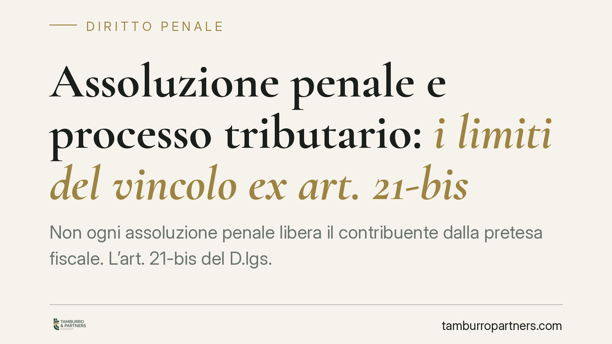

Assoluzione penale e processo tributario: i limiti del vincolo ex art. 21-bis
Non ogni assoluzione penale libera il contribuente dalla pretesa fiscale. L'art. 21-bis del D.lgs. 74/2000 lega l'efficacia nel processo tributario a precise formule assolutorie e a precisi presupposti processuali. Capire quali assoluzioni vincolano il giudice tributario e quali lo lasciano libero di decidere è oggi decisivo: la differenza può valere decine di migliaia di euro.

Il fatto
Il rapporto tra giudizio penale e giudizio tributario è da sempre un terreno insidioso. Per decenni i due processi hanno viaggiato su binari paralleli e autonomi: l'assoluzione penale non impediva al fisco di sostenere la propria pretesa, e viceversa.
L'art. 21-bis del D.lgs. 74/2000, introdotto dal D.lgs. 87/2024, ha modificato questo equilibrio. La norma attribuisce efficacia di giudicato nel processo tributario a determinate sentenze penali di assoluzione. Ma non a tutte: contano la formula adottata e il tipo di giudizio in cui è stata pronunciata.
Su questo impianto si attende un intervento della Corte costituzionale. Nota redazionale: la pronuncia Corte cost. n. 50/2026, indicata da alcune fonti, non risulta allo stato verificabile; il presente contributo si fonda sul solo dato normativo e va aggiornato una volta confermata l'esistenza e la portata della sentenza.
Inquadramento normativo
L'art. 21-bis D.lgs. 74/2000 stabilisce che la sentenza irrevocabile di assoluzione «perché il fatto non sussiste» o «perché l'imputato non lo ha commesso», pronunciata a seguito di dibattimento, ha efficacia di giudicato nel processo tributario, quanto ai fatti materiali accertati, nei confronti del contribuente che sia stato parte del processo penale.
Due precisazioni sono essenziali, e spesso vengono confuse.
Prima: le formule che vincolano sono quelle di merito pieno. «Il fatto non sussiste» e «non lo ha commesso» esprimono un accertamento positivo: il giudice penale ha riscontrato che il fatto non esiste o che l'imputato non ne è l'autore. Diversa è la formula «perché il fatto non costituisce reato», che attiene all'assenza di un elemento costitutivo o soggettivo del reato (ad esempio il dolo) e non nega la materialità della condotta. Diversa ancora è l'assoluzione per prova insufficiente o contraddittoria (art. 530, comma 2, c.p.p.): qui il giudice non accerta che il fatto non sia avvenuto, ma solo che la prova non ha superato la soglia dell'«oltre ogni ragionevole dubbio». Queste ultime due ipotesi non producono l'effetto vincolante dell'art. 21-bis.
Seconda: il vincolo opera solo se l'assoluzione è stata resa a seguito di dibattimento. Restano fuori, ad esempio, le sentenze di proscioglimento adottate con riti o fasi che non comportano una piena istruttoria.
Implicazioni pratiche
Il punto chiave è la diversità delle regole probatorie tra i due processi.
Nel processo penale la colpevolezza va provata oltre ogni ragionevole dubbio: nel dubbio, si assolve. Nel processo tributario, invece, operano le presunzioni legali, meccanismi che spostano sul contribuente l'onere di dimostrare il contrario di quanto l'amministrazione ha presunto sulla base di determinati indizi (si pensi agli accertamenti bancari).
Da qui una conseguenza concreta: un'assoluzione penale per prova insufficiente può lasciare del tutto intatta la pretesa fiscale, perché il giudice tributario conserva la propria autonomia di valutazione e può fondare la decisione su presunzioni che nel penale non bastavano a condannare.
Il peso della formula assolutoria diventa quindi centrale. Ottenere «il fatto non sussiste» anziché l'assoluzione dubitativa ex art. 530, comma 2, non è una sfumatura lessicale: nel primo caso il contribuente porta nel giudizio tributario un accertamento vincolante; nel secondo resta esposto alla pretesa, con un rischio economico che può valere decine di migliaia di euro.
Emerge così l'esigenza di coordinare la difesa penale e quella tributaria, trattandole come due fronti della stessa vicenda e non come compartimenti stagni.
Cosa fare in concreto
- Verificare con attenzione la formula del dispositivo della sentenza penale: la differenza tra «il fatto non sussiste», «il fatto non costituisce reato» e l'assoluzione ex art. 530, comma 2, c.p.p. determina l'operatività del vincolo.
- Accertare che l'assoluzione sia irrevocabile e resa a seguito di dibattimento, presupposti necessari per l'efficacia ex art. 21-bis.
- Nelle strategie difensive è opportuno valutare fin dall'inizio l'interazione tra i due giudizi, evitando che le scelte nel penale pregiudichino la posizione tributaria.
- Ricostruire con precisione i fatti materiali accertati nella motivazione penale, poiché è su questi, e non sulle valutazioni giuridiche, che si misura la portata del giudicato.
- Monitorare gli sviluppi giurisprudenziali sulla legittimità e sui confini dell'art. 21-bis prima di impostare l'azione, data la novità della disciplina.
Contributo informativo a cura di Tamburro & Partners - Avv. Giuseppe Tamburro. Non costituisce parere legale.
Ogni condominio ha una storia a sé.
Se gestisci un'amministrazione e vuoi un confronto su una specifica questione condominiale, scrivi allo studio. Ti rispondiamo entro un giorno lavorativo.